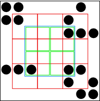

Figure 4: A solution to the gap problem: Construct new subnodes from the components of the existing node to calculate the squares we actually need. Again, blue is the area I wish to calculate; I split it into four green nodes. I compute these four blue nodes by building subnodes out of various combinations of the nine red subnodes that can be constructed from subnodes of the original node.
Back to Article